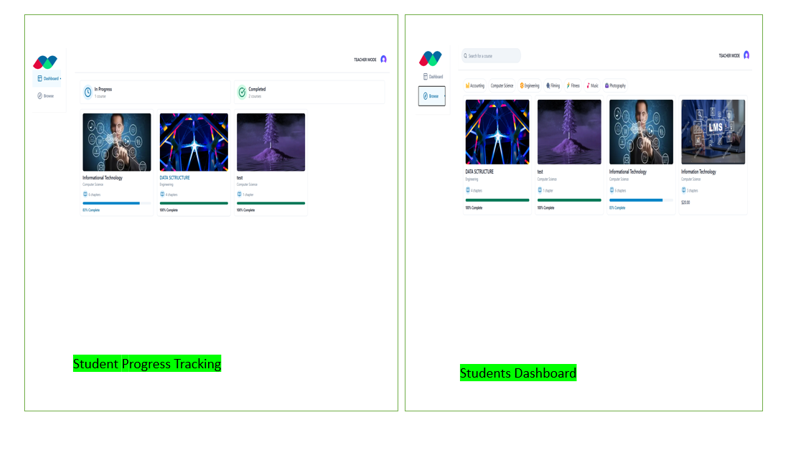
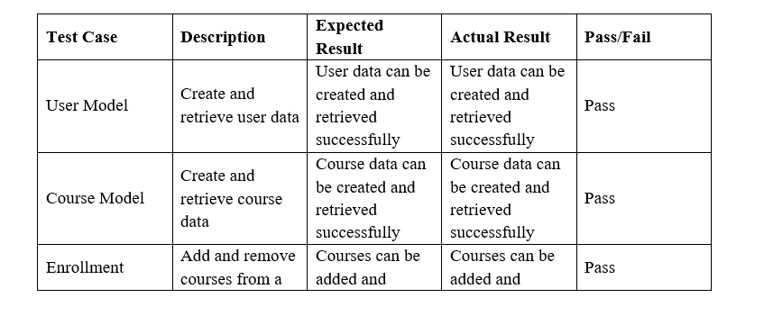

BACHELOR OF SCIENCE IN INFORMATION TECHNOLOGY
SUCCESS PLATFORM LEARNING MANAGEMENT SYSTEM (SPLMS)
BY
ALVIN KIMANI
A project proposal submitted to the school of pure and applied sciences in partial fulfillment for the award of the degree of Bachelor of Science in Information Technology
DECLARATION
I Alvin Kimani hereby declare that everything in this project report is based on my own knowledge and research carried out with expectation to be printed or in electronic content and has not been submitted in any institution of learning for any academic awards.
Sign………………………………
Date………………………………
APPROVAL
This project has been submitted in partial fulfilment of the requirements of the degree of Bachelor of Science Information Technology at Kirinyaga University with my approval as the university supervisor.
Supervisor Name: Ms. Rose Munyao.
Sign…………………………………….
Date…………………………………….
DEDICATION
I would like to dedicate this work to my loving family, friends and supervisor for their unwavering support in ensuring that tangible results were achieved. May the Almighty God bless you all for the efforts and all kind of support from advice to financial support.
ACKNOWLEDGEMENT
I would like to express my sincere gratitude and appreciation to all stakeholders whose efforts have played a pivotal role in the development of this research proposal.
First, I would like to express my sincere gratitude to my supervisor Mrs. Rose Munyao for his crucial advice, support, and knowledge as I was developing this proposal. Her thoughtful comments, corrections and helpful recommendations have substantially influenced the development of the research's goals and various methodologies used to achieve these.
Secondly, I am grateful to the various authors and researchers whose work and literature materials have been used to prepare my research proposal. Their published studies, reports, and academic articles have provided a solid foundation for the background and theoretical framework of the proposed study. I have gained insights from their work and above all, ideas to come up with this research proposal.
Third, I would like to express my gratitude to all my family and friends who have taken their time to help in correcting this work and providing guidance whenever needed. Their financial muscles cannot be ignored also for it has played a very key role in ensuring the success of this research proposal.
Lastly, I would like to express my gratitude to my family and research sponsors who have provided me with the financial support needed to conduct this research and come up with this research proposal.
ABSTRACT
This project aims to design and develop a comprehensive Learning Management System (LMS) that addresses key limitations in existing platforms by enhancing user experience, engagement, and data security. The proposed system will include functionalities such as user-friendly navigation, interactive course delivery, progress tracking, gamified learning elements, and compliance with industry standards like GDPR and HIPAA. By focusing on the unique challenges faced by educational institutions and corporate training programs, this project seeks to optimize learner engagement, streamline content management, and ensure secure data handling. Ultimately, the goal is to provide a versatile and scalable LMS solution that improves learning outcomes, fosters user trust, and supports diverse educational and professional training environments.
CHAPTER ONE:
1.1 INTRODUCTION
Learning Management Systems are some of the critical tools of modern education and professional worlds, catering to the emergent need for accessible, effective learning platforms. The systems ease the creation, management, and delivery of learning content, hence becoming indispensable for online learning, blended classrooms, and corporate training environments alike. As education evolves and embraces digital tools, LMS platforms offer more than just content delivery-they enhance collaboration, engagement, and performance tracking for learners and educators alike.
A successful LMS should also accommodate a wide variety of user needs; thus, it should allow both less and highly computer-literate learners to show their ease of navigation while introducing gamification and multimedia content. These systems can also be used to underpin decision-making through analytics tracking learner progress and suggesting further improvement. Equipped with tools that encourage interaction, participation, and innovation, the platforms revolutionize education into being entertaining and data-driven.
However, current LMS systems are battling difficult navigation, disengagement of learners, and issues with the security of sensitive data. Therefore, there is a pressing need for newer, intuitively designed systems that have a user-centric approach, modern data protection standards, and better serve educators, learners, and institutions. If suitably optimized, LMS has the potential to do to knowledge acquisition and dissemination what did not get accomplished in educational or professional settings.
1.2 BACKGROUND
Learning Management Systems (LMS) have become essential in modern education and training environments. With the rapid shift towards digital learning, institutions, businesses, and individual learners are increasingly relying on LMS platforms to facilitate online education. These systems provide centralized platforms for delivering, managing, and tracking educational content, offering learners the flexibility to access courses anytime and anywhere.
Despite the widespread adoption of LMS platforms such as Moodle, Blackboard, and Google Classroom, many of these systems face significant challenges. Complex user interfaces, limited learner engagement features, and inadequate security measures often hinder their effectiveness. Users with varying levels of technical proficiency may struggle to navigate the platforms, which affects learning outcomes and user satisfaction. Additionally, traditional LMS platforms often lack the interactive and gamified features necessary to keep learners motivated and engaged throughout their learning journey.
Security and compliance are also critical concerns for LMS platforms, especially when handling sensitive user data. Many existing systems fail to meet established security standards like GDPR and HIPAA, leaving user data vulnerable to breaches and unauthorized access.
In response to these challenges, this project aims to develop a Learning Management System that addresses these gaps by offering a simplified, intuitive user interface, enhancing learner engagement through gamification and interactive course layouts, and ensuring data protection with robust security measures. The proposed LMS will cater to users of all technical backgrounds, providing an accessible, engaging, and secure platform for online learning.
1.3EXISTING SYSTEM
Modern Learning Management Systems, such as Moodle, Canvas, Blackboard, and Google Classroom, have been widely adopted across educational institutions and corporate environments. The main role that each one plays in course management, delivery of content, and student tracking aids the learners in resource accession efficiently. For example, Moodle is a very flexible system with loads of options and, hence, finds broad applications in higher education, whereas its high level of complexity may raise a barrier to less technically prepared users. Canvas provides an easy, intuitive interface, though not all higher educational institutions can afford to pay its cost. Blackboard boasts of comprehensive tools but struggles with a dated user experience that ultimately holds engagement back. Google Classroom is user-friendly and free but lacks the advanced functionalities needed for complex training programs.
While these systems fulfill basic needs, they often fall short in enhancing user engagement and motivation. Features like gamification and interactive content are either underdeveloped or missing, hence no sustained interest by learners. Moreover, the security measures in some of these platforms do not align with modern compliance standards such as GDPR and HIPAA, which can lead to data breaches and a loss of user trust. These limitations indicate the need for a more streamlined, engaging, and secure LMS to address the shortcomings of existing systems.
1.4 PROBLEM STATEMENT
Existing LMS platforms, though functional, face critical challenges that limit their ability to offer effective, engaging learning experiences. Most of the platforms possess complicated interfaces, which confuse users and consequently irritate them. Too much confusion and frustration make both learners and instructors disinclined to use a platform fully, which causes a loss in overall efficiency and engagement. However, without gamification, interacting content, or feedback, it is difficult to hold a learner's interest for a more extended period, which often turns negative in educational outcomes. Data security and compliance are other concerns because many platforms do not fully meet industrial standards such as GDPR and HIPAA, which may lead to breaches and misuse of sensitive information. With secure data handling becoming increasingly important in educational and corporate settings, an LMS that does not have robust security measures could lose user trust and face legal repercussions. Addressing these challenges is important in developing an LMS that should be accessible, engaging, and secure, meeting modern learners' and institutions' needs.
1.5 PROPOSED SYSTEM
The proposed LMS is designed to address the failures of existing platforms by prioritizing simplicity, engagement, and security. It shall be designed with the user first in mind, ensuring an intuitive interface that is very clean and easy to navigate, no matter the technical background of the users. Tutorials and onboarding tools shall be integrated to minimize confusion and make sure users start off on the right foot.
The engagement shall be at the core, with gamification aspects like rewards, badges, and leaderboards, which shall encourage users to be more active in their learning process. Interactive tools, such as multimedia content and real-time collaboration features, will create a dynamic learning environment that fosters creativity and motivation. Security of data shall be a cornerstone of the system, including advanced measures such as encryption, role-based access control, and compliance with global standards like GDPR and HIPAA.
LMS will serve the needs of educational and corporate training with equal ease, and it shall be scalable and adaptable to different industries. The proposed system shall fill the gaps in usability, engagement, and security that have been so crucial and provide an all-inclusive solution for modern-day learners and institutions, enabling better outcomes and building trust in digital learning platforms.
1.6 GENERAL OBJECTIVES
The aim is to design and develop an LMS that will enhance accessibility, engagement, and data security for educational and corporate users.
1.8 SPECIFIC OBJECTIVES
1. To simplify the user experience and make navigation accessible to users of all technical levels.
2. To enhance learner engagement and motivation through increased interactivity.
3. To ensure data protection and privacy for all users by maintaining compliance with security standards.
1.9 PURPOSE OF STUDY
This research is intended to propose an easy-to-use, interesting, and secure LMS that enhances learning in all walks of life. The balance between usability, engagement, and security will be attained through the focus on intuitive design, interactivity, and strong security protocols, respectively.
1.10 JUSTIFICATION
This research is based on increasing demand for appropriate digital learning solutions at academic and professional levels. With the increasing interest in online and hybrid learning, there is a need for an LMS that would not only embed necessary learning tools but also increase user engagement and comply with strict data security standards. The development of such an LMS will benefit the institutions and organizations by improving learning outcomes, building trust in data practices, and providing an accessible platform to users of all skill levels. This would serve the useful purpose of offering insight into LMS design to support institutions in selecting technologies that meet their strategic aims and user needs.
1.11 SCOPE
This project will involve the development of a secure and engaging LMS, following the Agile methodology in iterative development, flexibility, and user collaboration. Pre-eminent activities include gathering requirements, implementing on sprint bases, continuous testing, and frequent deployment of functional increments. Focus shall remain on usability, gamification, and security to cater to both educational and corporate needs.
1.12 LIMITATIONS OF THE PROJECT
• Resource Demand: Continuous collaboration and regular feedback cycles can stress resources and teams' capacity.
• Complex Feature May Delay Development: However frequently the iterations are made, complex features take their own time to develop and deploy.
• Requires Skilled Teams: Agile requires highly skilled teams for successful implementation, and a lack of expertise could slow down progress.
1.13 THE SIGNIFICANCE OF THE STUDY
• User-Centered Design: Agile makes frequent user testing and feedback possible for the LMS to be intuitive and in line with user needs.
• Scalability: In Agile, its iterative nature lets continuous refinement take place for better adaptation to users and market demands.
• Engagement Focus: Agile provides for speed in delivering interactivity features such as gamification to increase user engagement.
• Security Assurance: Frequent updates enable timely incorporation of advanced security measures and compliance with various standards such as GDPR and HIPAA.
1.14 Operational Definitions of Terms
• Learning Management System (LMS): A digital platform for managing, delivering, and tracking educational and training content.
• User Interface (UI): The visual layout through which users interact with software applications.
• UX: A user's general experience when interacting with a digital system, encompassing ease of use, accessibility, and satisfaction.
• Gamification: The use of game-like features in non-game contexts, such as points and badges to encourage active participation.
• Compliance standards: Standards like GDPR, HIPAA that require platforms dealing with customer data to put in place features that ensure the protection and privacy of data.
• Data Encryption: The security process applied to encode data, making such data accessible only to the authorized users.
1.15 CONCLUSION
This chapter highlights the limitations of existing Learning Management Systems (LMS) in usability, engagement, and security. It emphasizes the need for a user-friendly, interactive, and secure LMS. The proposed system will address these gaps by focusing on intuitive design, gamification, and robust data protection, aiming to enhance learning outcomes and adapt to both educational and corporate needs.
CHAPTER TWO: LITERATURE REVIEW
2.1 INTRODUCTION
The aim of this literature review is to present the implementation and impacts of LMS, specifically related to how it helps in improving educational accessibility, enhancing learner engagement, and maintaining data security in academia and corporate sectors. Different aspects of LMS platforms, such as UI/UX, interactivity, compliance, and data security, will be reviewed in the literature.
The review also tends to outline the potential of LMS platforms in effectively promoting learner motivation, personal content delivery, and data protection, together with the efficiency brought into the operations of both educational institutions and organizations. It also points out challenges such as user engagement, security, and scalability issues that potentially arise in the implementation of such LMSs.
A review of the existing literature will, therefore, establish what is currently not offered by the different LMSs and forms the basis for the proposed project, which will seek to design and implement a customized LMS solution to address emerging needs and challenges faced by educational institutions and corporate training environments.
2.2 Related literature review
2.2.1. Moodle

Figure 1 moodle
Moodle is also one of the most extensively adopted open-source LMSs in higher education across the world. First released in 2002, it was designed to be flexible and scalable. Moodle is widely expandable by using plugins to cater to various functions related to quizzes, assignments, communication tools, and multimedia resources, thus providing flexibility in institutional requirements (Ziraba, Akwene & Lwanga, (2020).
2.2.2 Canvas
Figure 2 canvas
Canvas is a cloud-based LMS that recently has gained more popularity due to its user-friendly interface and integration capabilities. It supports mobile access, which is ideal for any institution looking to enforce the use of mobile learning. Canvas has been widely used in K-12 and in higher education institutions because of its ease of use (Petrovaite, (2023).
2.2.3 Blackboard (Al-Ajlan, 2008)
Figure 3 blackboard
Blackboard is one of the oldest LMS platforms, launched initially in 1997. It is known for its strong features that range from course management and grade tracking to content delivery. Blackboard is particularly popular with large universities and corporations when managing complex training environments (Almelhi, (2021)
Almelhi, A. M. (2021). The role of the Blackboard LMS in EFL course delivery during the Covid-19 pandemic: Investigating attitudes and perceptions of faculty and students. International Journal of English Linguistics, 11(2), 46-67.
2.2.4. TalentLMS (Abdymanapov, 2021)

Figure 4 TalentLms
TalentLMS is a cloud-based LMS, majorly designed for corporate training. It is intuitive and has easy course creation with integrations to business tools such as CRM and HR systems. The platform supports gamification and microlearning-both of which are very popular in the corporate world.
Studies focus on Talentless ease of use, which appeals to small and medium-sized enterprises (SMEs) for quick training deployment (Abdymanapov,2021). Literature also highlights its gamification tools that increase learner engagement. However, research suggests that Talent MS may not be as comprehensive for large organizations with complex learning needs due to limited customization options compared to open-source solutions.
2.2.5 Schoology (Ferdianto, F, 2019)

Figure 5 Schoology
Schoology is a cloud-based LMS used widely in K-12 for its collaborative emphases, including a slant toward communication tools. The platform integrates social network-like features, which go a long way in fostering good communication among students and teachers.
According Ferdianto, (2019), the findings prove that Schoology can support interactive learning environments, and it is effective for enhancing students' engagement. The features related to social learning in this tool are really unique, considering other similar but older LMS platforms. Nevertheless, critiques further point out that Schoology's assessment tools are less rich compared to those of Canvas or Blackboard, hence reducing its desirability for institutions with more stringent evaluation needs (Al-Ajlan, 2012).
2.2.6 Google Classroom

Figure 6 Google Classroom
Google Classroom is a free, web-based LMS developed by Google. The simple integration with Google Workspace, including Docs, Sheets, and Slides, makes it very popular in schools. It's lightweight and pretty easy to use. Simplicity is the key reason for its popularity, especially within the K-12 segment, followed by smaller educational establishments (Kassim, (2024).
Other studies emphasize that Google Classroom is easy to adopt and inexpensive, hence it can be afforded by schools on a tight budget (Shaharanee, Jamil & Rodzi, 2016).
The literature also refers to its strong emphasis on collaboration through tools from Google Drive, therefore an environment for group work can be well nurtured (Al-Maroof & Al-Emran, 2018). However, its limitation of advanced features and a lack of comprehensive reporting tools are seen as disadvantages for higher education and corporate training (Pappas, 2017). 7. SAP Litmos
2.2.7 SAP Litmos
Figure 7 SAP Litmos
SAP Litmos is a cloud-based LMS known for its corporate training capabilities, offering pre-built course content in areas like compliance, safety, and sales training. It integrates well with other SAP systems and third-party business tools, thus turning it into a favorite solution for large enterprises.
Literature praises SAP Litmos for its comprehensive content library and integration capabilities, making it suitable for large-scale corporate training programs (Calungsod et al.,2024). Its ability to handle global training with features like multilingual support is also highlighted. However, the platform’s complexity in setting up and managing large training programs can be a hurdle for organizations without technical expertise.
2.3 GAPS/ LACUNAS
i. Gap One:
Poor User Interface and User Experience
Many Learning Management System platforms like Moodle and Canvas have cluttered and complicated designs that make navigation and interactivity very difficult for the users. The proposed Learning Management System shall have a very simplified and intuitive design, coming along with onboarding tutorials and simplified navigation design with search functionality to enhance user experience in navigation.
ii. Gap Two:
Lack of Learner Engagement Features
The majority of the existing Learning Management Systems e.g. Moodle, Google Classroom and TalentLMS lack engaging and motivating features like interactive tools or rewards to engage learners. The proposed Learning Management System will include gamification features e.g. points, rewards, leaderboards and interactive course layouts to keep learners motivated and involved.
iii. Gap Three:
Inadequate data Security and Compliance
Most of the LMS platforms e.g. Blackboard. either lack basic compliance standards, such as GDPR and HIPAA, or have poor security features that put user data at risk. The new LMS will be more oriented toward compliance, with strong security measures such as data encryption and role-based access to user data for trust assurance.
2.4 CONTEXT DIAGRAM
This is the context diagram for learning management system, where there is description of the entire learning management system in details
Figure 8 conceptual framework
2.5Chapter conclusion
The review highlights various Learning Management Systems (LMS) like Moodle, Canvas, Blackboard, TalentLMS, Schoology, Google Classroom, and SAP Litmos, each with distinct strengths and limitations. Common challenges include complex user interfaces, limited learner engagement features, and inadequate data security. To address these gaps, a new LMS is proposed, focusing on a simplified, intuitive design, enhanced engagement through gamification and interactive content, and robust security measures that comply with standards like GDPR and HIPAA. This approach aims to create a user-friendly, engaging, and secure platform for educational and corporate training needs.
CHAPTER THREE: METHODOLOGY
3.1 INTRODUCTION
The methodological approach followed for the development of the LMS is described in this chapter. The iterative and flexible methodology is portrayed for the development of a secure, engaging, and efficient system. The methodology shows how committed one needs to be to align the development process to project objectives, putting forward usability, gamification, and security for educational purposes.
3.2 DEVELOPMENT METHODOLOGY
The methodology to be used in software development delineates the steps and processes toward the desired outcome. In this LMS project, the Agile methodology has been chosen because of its iterative approach and adaptability. Agile allows for continuous improvement, incorporation of feedback, and adaptability to emerging requirements during the development cycle.
3.2.1 AGILE METHODOLOGY
Agile methodology allows for incremental development, where functional components of the system are delivered in iterative cycles called sprints. It also ensures continuous delivery with evolving requirements accommodated.
Figure 9 agile
Key phases in Agile development include:
1. Requirement Gathering and Backlog Creation: In this stage, the key features required for the LMS are identified and prioritized into a backlog, including user authentication, course management, progress tracking, gamification, and wallet integration. This list makes sure that the most important features are developed first, with flexibility to adapt as new requirements emerge through continuous feedback. The backlog keeps development focused on meeting key objectives like usability, security, and engagement.
2. Sprint Planning: During every Sprint, specific tasks and features are selected from the backlog, which usually runs for 2 to 3 weeks. Such planning will ensure that these tasks go in tandem with the objectives of the project and deliver functional subsets of the LMS.
3.Design and Prototyping: Every sprint covers specific design activities for respective parts of the system. It includes wire-framing for the UI, schema designing for the database, and other specific details for user interactions. Then the prototypes are shared to seek feedback and review.
4. Implementation and Development: Features are developed incrementally using web technologies like PHP, TypeScript, JavaScript, and MySQL. This involves both front-end components, such as HTML, CSS, and JavaScript, and back-end components, including server logic and database integration.
5. Continuous Testing: Testing is done alongside development to quickly find and resolve bugs. Unit tests, integration tests, and user acceptance testing ensure that functional and quality features are delivered with each sprint.
6. Iteration Review: During the end of each sprint, the work done is reviewed and demonstrated. Feedback is collected for further improvement in the iterations and refinement of the backlog.
7.Deployment: A minimum viable product or a set of completed features is deployed for use. Continuous deployment practices can be followed to release updates frequently.
8.Maintenance and Refinement: The system is continuously enhanced for performance, addressing user feedback, and integrating features as needed.
3.3 JUSTIFICATION FOR THE USE OF AGILE
Agile was chosen for this LMS project due to its iterative and non-rigid nature, thus fitting the goals of the project. It allows for continuous improvement, rapid adaptation to changing needs, and delivery of functional components incrementally. This iterative approach ensures that the project remains focused on usability, security, and engagement while maintaining high quality throughout its development.
3.4 DATA COLLECTION
Data collection in this study involves gathering information through iterative feedback, usability testing, and literature reviews to ensure the LMS is aligned with the objectives of the project quantitative and qualitative data collection was used in providing holistic insights.
Primary data was gathered through usability testing sessions where participants engaged a prototype developed during the Agile sprints. It is performed through surveys, both open-ended and closed questions concerning system usability, interface design, gamification features, and functionality. Secondary information is obtained from academic literature that analyzed already existing LMS platforms to identify best practices for usability, gamification, and security in educational applications. A pilot test of the survey questions was conducted with a small group of participants to enhance the accuracy and relevance of the data collected. This process refined the content and ensured the validity of the feedback instruments.
Feedback was iteratively collected during each sprint, allowing participants to interact with the evolving system and provide real-time input on newly implemented features. Online surveys allowed for ease of participation, flexibility for respondents, and reduced biases.
3.5 DATA ANALYSIS
Data collection in the study was subjected to a structured analysis to ensure relevance and appropriateness for the project objectives.
First, usability test and survey feedback were reviewed for completeness and consistency. Those responses that were incomplete or ambiguous were excluded from the analysis.
The valid responses were then coded to identify key themes and patterns. Substantive categories were derived through thematic analysis for describing user experiences and discussing the LMS in the contexts of its intended features, namely, usability, gamification, and security. The analysis integrated line-by-line coding to systematically capture the repeated phrases and ideas. Codes were then sorted into broader categories that described commonalities and differences from user feedback. Iterative comparisons of the data allowed identification of trends and gaps, adjusting the LMS features accordingly in successive Agile sprints. Secondary data from literature reviews were also integrated to validate findings and enhance interpretation of user feedback. This inductive approach made sure that the analysis stayed pegged to the data, while the insights found from it informed the development process directly. With continuous refinement of the system based on analyzed feedback, the project maintained a focus on delivering an engaging, secure LMS, which was fitted for its use case.
3.6 CONCLUSION
Agile methodology allows for iterative development, user feedback, and continuous improvement in creating a robust and interactive LMS. This will make sure that the system will align with the defined objectives and deliver a secure, engaging, and functional platform for educational purposes.
CHAPTER FOUR: SYSTEM DESIGN
4.0 Introduction
System Design is a crucial phase in the development of the Success Platform Learning Management System (SPLMS) as it defines the structure, functionality, and implementation approach. This chapter translates the requirements analysis into a structured blueprint to guide development. It covers system architecture, data flow, user interface design, and module integration. A well-defined system design ensures the SPLMS meets the learning needs of users while providing seamless management for administrators and instructors.
4.1 Requirements
Before designing the Success Platform Learning Management System, the system's requirements are analyzed based on industry best practices and current learning management solutions. These include hardware, software, and system functionality requirements.
Functional Requirements (What the system should do)
1. User Roles
• Admins, instructors, and students should have separate role-based permissions.
2. Course Management
• Instructors should be able to create, update, and delete courses.
3. Lesson Management
• Each course should have chapters with video content and quizzes.
4. User Authentication
• Secure login and registration via Clerk authentication.
5. Progress Tracking
• The system should track course progress and completion status.
Non-Functional Requirements (How the system should work)
1. Hardware Requirements
o Processor: Intel Core i5 (or equivalent) with a speed of 2.50GHz
o Storage: 100GB SSD
o Memory: 8GB RAM or higher
o Display Monitor: 15.6” screen or larger
o Network: Broadband internet connection (10 Mbps or higher)
2. Software Requirements
o Server: XAMPP for local development)
o Development Environment: Visual Studio Code
o Web Browser: Google Chrome, Mozilla Firefox, or Edge
o Operating System: Windows 11
3. Technology Stack
o Front-end: Next.js (React framework), Tailwind CSS
o Back-end: Node.js (Express.js)
o Database: PostgreSQL with Prisma ORM
o Authentication: Clerk for user authentication
o Cloud Services: AWS S3 for file storage, Mux for video streaming
o Payment Integration: Stripe for course purchase
4.2 Context Level Diagram
The context-level diagram illustrates the interactions between Success Platform Learning Management System and external entities, including administrators, instructors, and students.
Figure 10
Success Platform Learning Management System interacts with users through a web-based platform where users authenticate, access courses, submit assignments, and process transactions.
4.3 Input Design
The user interface will be designed for ease of use and accessibility across devices. Key input screens include:
• Sign-up Page: Allows users to register and create accounts.

Figure 11 sign up page
• Login Page: Enables users to log in with email or third-party authentication.
Figure 12 login page
4.4 Process Design
The SPLMS process flow includes the following major operations:
• User Registration: Users register and verify their email before accessing the platform.
• Course Enrollment: Students enroll in courses and access learning materials.
• Progress Tracking: System updates user progress after completing lessons.
4.4.1 System Flowchart
Figure 13 system flowchart
4.4.2 Use-Case Diagram
The use-case diagram represents different user interactions within SPLMS, such as course enrollment and, progress tracking.
Figure 14 use case diagram
4.6 Database Design
The database structure ensures efficient data storage and retrieval. Key tables include:
4.7 Output Design
Success Platform Learning Management System will provide various output formats:
• User Dashboard: Displays enrolled courses, and progress.

Figure 15 user dashboard
• Reports: Admins can generate course completion reports and financial summaries.
• Graphical Representation: Charts and progress bars for course completion tracking.

Figure 16 progress tracking
4.8 Conclusion
The system design of SPLMS ensures a robust and scalable learning management platform. A structured approach in defining requirements, database schema, user interface, and process flow guarantees a seamless learning experience. The next phase involves system development, focusing on coding and implementation based on this structured design.
CHAPTER FIVE: SYSTEM TESTING AND IMPLEMENTATION
5.1 INTRODUCTION
System testing and implementation are critical phases in the software development lifecycle, ensuring that the SPLMS platform meets functional, performance, and security requirements before deployment. Testing helps identify bugs, validate system functionality, and improve the overall user experience. This chapter discusses the various testing methodologies applied to SPLMS, including unit testing, integration testing, system testing, and database testing. Each type of test ensures that individual components work correctly, interact seamlessly, and perform optimally under different conditions.
Additionally, this chapter outlines the implementation requirements necessary for the successful deployment of SPLMS. These include hardware, software, and infrastructure requirements, ensuring scalability, security, and a smooth user experience. Finally, the section provides insights into the development tools used and the key system pages that define the SPLMS platform. The chapter concludes by evaluating the readiness of the system for deployment and the potential future improvements for scalability and performance.
5.2 UNIT TESTING
Unit testing ensures that individual components of the system function as expected. For SPLMS, unit testing verifies the correctness of functions such as user registration, course creation, and payment processing.

Table 2 unit testing
5.3 INTEGRATION TESTING
Integration testing verifies that different components of Success Platform Learning Management System interact correctly. This ensures smooth communication between the modules such as course management, payment, and user authentication.
Table 3 intergration testing
5.4 SYSTEM TESTING
System testing ensures that the entire SPLMS platform functions correctly under various conditions, including high user load and security threats.
Table 4 system testing
5.5 DATABASE TESTING
Database testing ensures the integrity and efficiency of data storage, retrieval, and migration.

Table 5 database testing
5.6 IMPLEMENTATION REQUIREMENTS
The successful deployment of SPLMS depends on several implementation requirements.
Hardware Requirements:
• Hosting on a server with at least 4 CPU cores, 8GB RAM, and 50GB storage.
• Minimum internet speed of 20Mbps.
Software Requirements:
• Developed using Next.js, TypeScript, and MySQL.
• Secure and scalable third-party libraries with open-source licenses.
Infrastructure Requirements:
• SSL/TLS encryption for secure data communication.
• Regular server backups to ensure data integrity.
• Compliance with OWASP security standards.
Other Requirements:
• SPLMS should support 500 simultaneous users with a page load speed of under 2 seconds.
• Future scalability to handle 20,000 concurrent users.
5.7 CODING TOOLS
The SPLMS system was built using various programming languages, frameworks, and tools.
• Programming Languages: TypeScript, JavaScript, PHP.
• Frameworks: Next.js, Bootstrap.
• Database: MySQL.
• Development Tools: Visual Studio Code, Prisma ORM.
• Libraries & Packages: Clerk for authentication, Stripe for payments.
• Testing Tools: Jest for unit testing, Cypress for end-to-end testing.
5.8 SYSTEM PAGES
• Home Page: Provides an overview of the platform.
Figure 18 home page
• About Page: Describes SPLMS's purpose and mission.
• Contact Us Page: Allows users to reach out for support.
• Privacy Policy Page: Outlines data protection policies.
5.9 CONCLUSION
With the increasing adoption of digital learning platforms, Success Platform Management System is designed to provide a secure, scalable, and user-friendly learning management system that meets the needs of both learners and educators. The system has undergone rigorous testing to ensure its reliability, including unit testing for individual components, integration testing for module interactions, system testing for performance and security, and database testing for data integrity.
The implementation of Success Platform Management System considers hardware, software, and infrastructure requirements to support a seamless learning experience. The use of modern development tools and technologies such as Next.js, TypeScript, Prisma ORM, and MySQL ensures the platform's efficiency and maintainability.
As online education continues to evolve, SPLMS is well-positioned to scale and adapt to future demands. With support for up to 500 concurrent users and plans for scalability to handle 20,000 users, the system is designed for long-term growth and sustainability. Future improvements may include AI-driven course recommendations, enhanced security measures, and better mobile accessibility to further enhance the user experience. By ensuring a robust, well-tested, and scalable architecture Success Platform Management System is set to become a leading solution in the online learning industry.
CHAPTER SIX: CONCLUSION AND RECOMMENDATIONS
6.1 INTRODUCTION
The Success Platform Learning Management System (SPLMS) was developed to provide a structured, scalable, and efficient platform for learners and educators. This chapter presents the overall conclusions drawn from the development and implementation of SPLMS and highlights areas for future improvements. The chapter evaluates the key achievements of the system, its effectiveness in meeting the learning needs of users, and its impact on online education. Additionally, recommendations are provided to enhance the system’s usability, scalability, and security to ensure long-term success.
6.2 CONCLUSION
The development of SPLMS has successfully delivered a functional, user-friendly, and secure learning management system. The platform provides essential features such as user authentication, course creation, progress tracking, payments, and feedback collection, enabling a seamless e-learning experience. Through rigorous testing, the system has demonstrated high reliability, performance, and security, ensuring that users can engage with educational content without technical issues.
A major strength of SPLMS is its scalability, designed to support 500 concurrent users with future expansion capabilities for 20,000 users. Additionally, integration with Stripe for payments, Clerk for authentication, and a structured database (MySQL + Prisma ORM) ensures secure and efficient transactions and data management. However, there is room for improvement, particularly in enhancing mobile accessibility, refining user engagement features, and integrating AI-driven analytics for personalized learning recommendations.
To further strengthen SPLMS, the system should be continuously improved by expanding its feature set, enhancing user engagement, and integrating advanced technologies such as AI-based recommendations and real-time interactive learning tools.
6.3 RECOMMENDATIONS
Based on the analysis and evaluation of SPLMS, the following recommendations are proposed to enhance its functionality and overall performance:
1. Expand Course Offerings
• Introduce a wider variety of courses covering diverse subjects to attract more learners.
• Partner with educational institutions and instructors to enhance course availability.
2. Implement AI-Powered Learning Recommendations
• Use machine learning algorithms to provide personalized course suggestions based on user progress, interests, and engagement.
• Implement adaptive learning paths to tailor the content to the learner’s proficiency level.
3. Improve User Engagement and Collaboration Features
• Introduce discussion forums and peer-to-peer interactions to encourage collaborative learning.
• Enable live Question &Answer sessions, interactive quizzes, and gamification to enhance engagement.
4. Enhance Mobile Accessibility
• Optimize SPLMS for mobile-first experiences to ensure seamless access on smartphones and tablets.
• Develop a dedicated mobile application to enhance accessibility and usability.
5. Strengthen Security Measures
• Implement two-factor authentication (2FA) to improve account security.
• Enhance data encryption and compliance with industry standards such as GDPR to protect user information.
6. Improve Customer Support and Feedback Mechanisms
• Introduce live chat support and AI-driven chatbots for instant assistance.
• Expand the feedback system to analyze responses and improve system functionality.
By implementing these recommendations, SPLMS can attract more learners, improve retention rates, and create a more personalized and interactive learning experience.
6.4 FUTURE WORK
To ensure that SPLMS remains innovative and continues to meet the evolving demands of online education, future enhancements will focus on integrating advanced technologies and improving user experience. One key area of development is the implementation of AI-driven virtual assistants to provide real-time guidance and personalized course recommendations. Additionally, blockchain-based certification will be introduced to ensure secure, verifiable credentials for learners. The platform will also explore cryptocurrency and alternative payment methods to enhance global accessibility. Furthermore, advancements in Augmented Reality (AR) and Virtual Reality (VR) will be leveraged to create immersive, interactive learning experiences. To support the growing user base, Success Platform Learning Management System will transition to a scalable cloud-based infrastructure, allowing for high performance and reliability. By continuously adapting to technological trends and user needs, Success Platform Learning Management System will evolve into a cutting-edge, future-ready learning management system that empowers learners and educators worldwide.
REFERENCES
Abdymanapov, S., Muratbekov, M., Altynbek, S., & Barlybayev, A. (2021). REVIEW OF LMS SYSTEMS DURING COVID-19 PANDEMIC. In INTED2021 Proceedings (pp. 8499-8504). IATED.
Almelhi, A. M. (2021). The role of the Blackboard LMS in EFL course delivery during the Covid-19 pandemic: Investigating attitudes and perceptions of faculty and students. International Journal of English Linguistics, 11(2), 46-67.
Calungsod, K., Dennis, D., Bobker, M., Reale, P., O'Grady, G., Parlo, M., ... & Schmidt, J. (2024). Platform for Remote Deployment and Training for Enhanced Building Operation Practices (Building Re-Tuning and On-going Commissioning) (No. DOE-CUNY-EE0009087). CUNY Building Performance Lab
Calungsod, K., Dennis, D., Bobker, M., Reale, P., O'Grady, G., Parlo, M., ... & Schmidt, J. (2024). Platform for Remote Deployment and Training for Enhanced Building Operation Practices (Building Re-Tuning and On-going Commissioning) (No. DOE-CUNY-EE0009087). CUNY Building Performance Lab.
Kassim, W. Z. W. (2024). Google Classroom: Malaysian University Students’ attitudes towards its use as learning management system. Brazilian Journal of Development, 10(1), 207-223.
Petrovaite, E. (2023). MALL-Based LMS: a comparative study of Canvas and Moodle.
Ziraba, A., Akwene, G. C., & Lwanga, S. C. (2020). The adoption and use of Moodle learning management system in higher institutions of learning: A systematic literature review. American Journal of Online and Distance Learning, 2(1), 1-21.
APPENDICES
APPENDIX I:
QUESTIONNAIRE
You are cordially invited to participate in a survey for the development of a Learning Management System (LMS).
Please tick where appropriate.
Name _____________________________________________ (Optional)
1. Gender:
• Male [ ]
• Female [ ]
2. Age:
• 18-35 years [ ]
• 35-60 years [ ]
• Above 60 years [ ]
3. Do you have access to the internet?
• Yes [ ]
• No [ ]
4. Have you used an LMS before?
• Yes [ ]
• No [ ]
5. How would you rate the user interface of the current LMS platforms you have used?
• Very User-Friendly [ ]
• Moderately User-Friendly [ ]
• Difficult to Navigate [ ]
• Extremely Complicated [ ]
6. Do you find the current LMS platforms engaging and motivating?
• Yes [ ]
• No [ ]
7. What features would you like to see in a new LMS platform to improve user experience?
• Simplified Interface [ ]
• Onboarding Tutorials [ ]
• Gamification (Badges, Leaderboards) [ ]
• Interactive Course Layouts [ ]
• Others: _______________________________
8. Do you think an automated progress tracking and notification system would enhance your learning experience?
• Yes [ ]
• No [ ]
9. How important is data security and privacy in an LMS for you?
• Extremely Important [ ]
• Moderately Important [ ]
• Not Important [ ]
10. What challenges have you faced with existing LMS platforms?
________________________________________
________________________________________
________________________________________
Thank you for your participation!
APPENDIX II: PROJECT PLANNING TIMELINE
Table 6: project planning
APPENDIX III:
Table 7: Budget and Resource Allocation
Table 2 budget